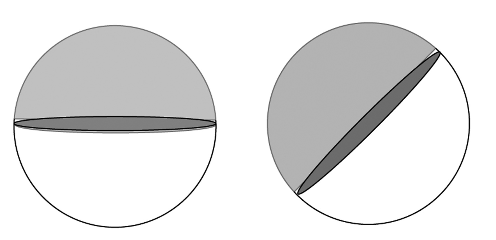

{% raw %}

<article>
  <section class="development">
    <p class="Paragraph-Style-2">$habits$</p>

    <p class="Paragraph-Style-2">$mind$</p>
  </section>

  <section>
    <p class="Paragraph-Style-2">$of$</p>
  </section>

  <section>
    <p>to draw, or represent in some fashion, a diagram in order to
    help understand a problem; to interpret or vary a given
    diagram</p>
  </section>

  <section>
    <div class="Habits-Thought-Bubble">
      <div class="problem" data-problem-number="1">
        <p>In the following picture, rectangle ABCD is inscribed in
        a
        quarter-circle. $DC = 5$, and $CE = 4$. Can you figure
        out the
        length of diagonal AC?</p>
      </div>

      <p class="Habits---Inline-Diagram"></p>

      <p>Often a problem that can seem particularly
      perplexing can be solved by looking at it in a
      different way. Sometimes the best way to keep
      track of the different information and variables
      in a problem is to draw a picture of some sort,
      to visualize the information so that it is in a form that is
      easier to understand. You saw this last year as you solved a
      variety of problems, at times by constructing models, and at
      times by finding clever ways to visually represent things
      that at first seemed quite nonvisual.</p>

      <div class="problem" data-problem-number="2">
        <p>Four trees are planted at each corner of a square park.
        The city wants to expand the park to twice its current
        area, but in such a way that the park is still a square,
        and none of the four trees is in the interior of the park.
        (The trees cannot be transplanted.) Draw a plan for a new
        park that meets these criteria.


</p>

<p></p>

<p>        </p>
      </div>

      <p class="Habits---Inline-Diagram"></p>

      <div class="problem" data-problem-number="3">
        <p>The shaded parts of the spheres below are
        hemispheres.


</p>

<p></p>

<p>        You throw three darts onto the surface of a globe, each
        from a randomly chosen direction. What is the probability
        that all three darts lie in one hemisphere?</p>
      </div>

      <div class="problem" data-problem-number="4">
        <p>The circles in the diagram each have
        radius 1 cm, are tangent to each other and also to the
        square PARK. Their centers are on the line PR. Find the
        area of the square PARK.


</p>

<p></p>

<p>        </p>
      </div>

      <div class="problem" data-problem-number="5">
        <p>Triangles of many different sizes and shapes can be
        created, two of whose sides have lengths 12 and 13 cm
        respectively. Which of these triangles has the greatest
        area?</p>
      </div>

      <div class="problem" data-problem-number="6">
        <p>A rectangle and a square are inscribed in congruent
        circles.&nbsp;The rectangle has a width of 6 and a length
        of 8.&nbsp;What is the area of the square?</p>
      </div>

      <div class="problem" data-problem-number="7">
        <p>Three identical, spherical oranges are placed in a bin
        as part of a supermarket display. The bin is exactly long
        and wide enough to have two oranges fit snugly in the
        bottom, but there’s plenty of room to layer oranges above
        these two. If the radius of an orange is 2 inches, find the
        height of this small stack.</p>
      </div>

      <div class="problem" data-problem-number="8">
        <p>A street has parallel curbs 40 ft apart. A crosswalk
        bounded by two parallel stripes crosses the street at an
        angle. The length of the curb between the stripes is 15
        feet, and each stripe is 50 feet long. Find the distance
        between the stripes.</p>
      </div>

      <div class="problem" data-problem-number="9">
        <p>Let A and B be any two points in a plane.</p>

        <p class="problem-part">. How many different circles can
        you draw that go through points A and B? Can you give the
        radius of the smallest possible circle? Of the biggest?</p>

        <p class="problem-part">. How many different rectangles can
        you draw with opposite vertices on points A and B?</p>
      </div>

      <div class="problem" data-problem-number="10">
        <p>PQ and QR are diagonals of two faces of a cube. Find the
        measure of $\angle PQR$.</p>
      </div>

      <div class="problem" data-problem-number="11">
        <p>A trapezoid is inscribed in a circle of
        radius 5 cm so that one base is a
        diameter of the circle, and the other
        base has length 5 cm. What is the
        perimeter of the trapezoid?</p>
      </div>

      <div class="problem" data-problem-number="12">
        <p>If you start with $\frac{1}{2}$ then add
        $\frac{1}{4}$, then $\frac{1}{8}$, then
        $\frac{1}{{16}}$, and so on, ad infinitum, what do you
        suppose the answer would be? Draw a diagram that would
        justify your response.</p>
      </div>

      <div class="problem" data-problem-number="13">
        <p>How many sides does a cube have? How about a
        pyramid?</p>

<p>        Can you build a closed 3-dimensional shape out of 4 flat
        sides? How about out of 3 flat sides? Give examples, or
        explain why not.</p>
      </div>

      <div class="problem" data-problem-number="14">
        <p>Suppose you have a box that has a base of 1 inch by 5
        inches and that stands 8 inches tall. How many ½ inch
        radius spherical balls can you get into this box if you
        can’t let any ball protrude above the top of the
        box?</p>
      </div>

      <div class="problem" data-problem-number="15">
        <p>Craziola, the wacky pizza guy, has decided he wants to
        cut a pizza into as many
        pieces as possible, with as few straight cuts as possible.
        He doesn’t care at all if the pieces are of equal size, he
        just wants to make the most number of distinct pieces.
        With 1 cut, he produces 2 pieces. With 2 cuts, he creates a
        maximum of 4 pieces, no matter how crazy the 2 cuts he
        makes are. How many pieces can he possibly make with 3
        cuts? 4 cuts? What about n cuts? Can you find the
        pattern?</p>
      </div>

      <div class="problem" data-problem-number="16">
        <p>Is it possible to arrange six pencils so that they all
        touch each other?</p>
      </div>

      <div class="problem" data-problem-number="17">
        <p>Mr. Shimano gives an extremely difficult Japanese test.
        The highest score was 74% and the lowest 31%. Rather than
        give a retest, Mr. Shimano decides to raise the 74% to 93%
        and the 31% to 61%. For a student who scored 57 on the
        original test, what score do you think Mr. Shimano should
        give him after the adjustment?</p>
      </div>

      <div class="problem" data-problem-number="18">
        <p>A circle is sitting inside an equilateral
        triangle so that it’s tangent to the sides
        of the triangle in three places. Another equilateral
        triangle is inside the circle
        with its three vertices on the circle. If
        the length of a side of the smaller triangle is 1 cm, find
        the length of a side of the bigger triangle.</p>
      </div>

      <div class="problem" data-problem-number="19">
        <p>Two sides of a triangle measure 6 and 11 cm
        respectively. If the length of the third side is also an
        integer, what possible lengths can the third side have?</p>
      </div>

      <div class="problem" data-problem-number="20">
        <p>What is the maximum number of acute angles a convex
        polygon can have?</p>
      </div>

      <div class="problem" data-problem-number="21">
        <p>A hungry spider and a fly are in a room 30 feet long, 12
        feet wide, and 12 feet high. The spider is on one of the
        smaller walls, 6 feet from each side and 1 foot from the
        ceiling. The fly is on the opposite wall, 6 feet from each
        side and 1 foot from the floor. Assume that the fly does
        not move (it is paralyzed by fear!) and find the shortest
        path that the spider can take to eat the fly.</p>
      </div>
    </div>
  </section>

  <figure class="fig-md">
    
  </figure>

  <figure class="fig-md">
    
  </figure>

  <section>
    <div class="story">
      <p class="Title-4">visualize</p>
    </div>
  </section>

  <figure class="fig-md">
    
  </figure>

  <section>
    <div class="story">
      <p class="Title-4">visualize</p>
    </div>
  </section>

  <figure class="fig-md">
    
  </figure>
</article>

{% endraw %}

